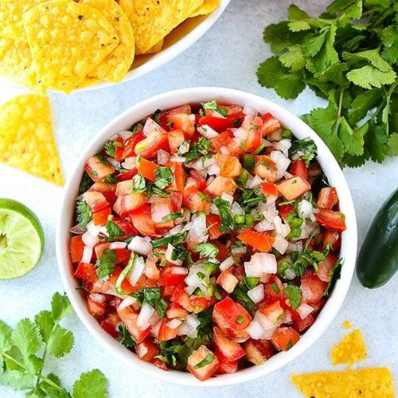

Pico de Gallo

What you'll need:
- 2 large tomatoes, preferably heirloom, chopped
- 1/4 onion, chopped
- 2 jalapeños, finely chopped
- 1 garlic clove, finely grated
- 1/3 cup cilantro leaves with tender stems, finely chopped
- 3 tablespoons fresh lime juice
- Kosher salt
Preparation:
Gently toss tomatoes, onions, jalapeños, garlic, cilantro,
and lime juice in a small bowl; season with salt. Let sit,
uncovered, to let flavours meld, about 10 minutes.
Home